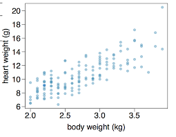
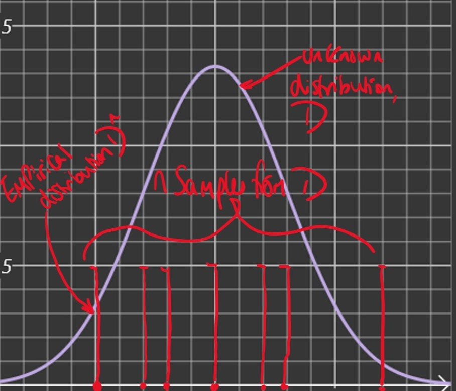

So far we have considered a deterministic model, f(x)=wx

However, we can see that there is variation in the data for each value of x
A probabilistic model can account for this variance
e.g. F(x)=wx+N
where:
N∼N(0,σ2)
is a noise term
F(X) is a random variable which can be described by a conditional densityP(y∣x,w)
An aside into basic probability
Probability Density Functions
A random variable takes a value that depends on a random phenomenon
The density function ofa continuous random variable X is a function p:R→R s.t.
∫abp(x)δx=Pr(a≤x≤b)
The normal distribution has the probability density function
(1)
f(x;μ,σ2)=2πσ21exp(−2σ2(x−μ)2)
Where μ and σ2 are the parameters of the distribution.
Expectation
The expected value of f(x) when x is a random variable with p.d.fP is
(2)
Ex∼P[f(x)]=∫−∞∞P(x)f(x)δx
Joint Distributions and Independence
The joint density function of n random variables x1,⋯,xn is a function P:Rn→R s.t.
(3)
∫DP(x1,⋯,xn)δx1⋯δxn=Pr((x1,⋯,xn)∈D)
for any n-dimensional domain D⊆Rn
if x1,⋯,xn are nindependent random variables with density functions P1,⋯,Pn and joint density P then
(4)
Pθ(x1,⋯,xn)=i=1∏nPθ(xi)
Empirical Distribution
Given n independent samples Xi,⋯,Xn from an unknown distribution, D, we can construct an approximation of D by uniformly sampling from the set {X1,⋯,Xn}

Given X1,⋯,Xn initial samples from D, the empirical distribution of D has the density function:
(5)
Prn(x):=n1i=1∑nδ(Xi−x)
Where δ is the Divac delta i.e. δ(x)=0 for x=0 and ∫−∞∞δ(x)δx=1
Note: EX∼Prn[f(X)]=n1∑i=1nf(Xi)
The Learning Task, T
Instead of deterministically predicting an output y for a given input x we will now train a probabilistic model represented by a conditional density function
(6)
Pmodel(y∣x;θ)
Where:
y← density function of output
x← input
θ← parameter of model
Given training data and a family of probability models we need to choose the parameter(s) θ which are most appropriate for the data. We call this the Maximum likelihood estimate
Likelihood function
Given independent training data (x1,y1),⋯,(xn,yn) and a probabilistic model Pmodel with parameter θ, the likelihood function is defined as: